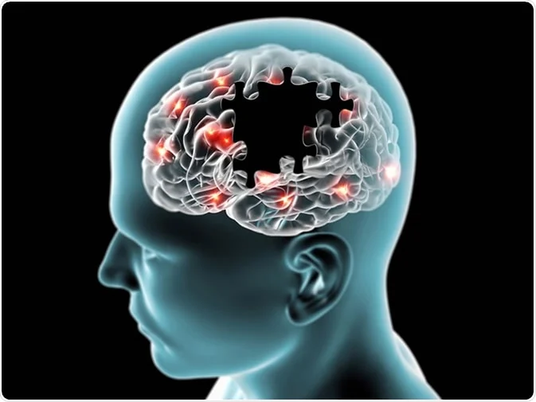

INTRODUCTION
Alzheimer’s disease (AD) is a progressive neurodegenerative disorder that leads to memory loss, confusion, and a gradual decline in both cognitive and physical abilities (Alzheimer’s Association, 2023). As global life expectancy continues to rise, the prevalence of AD is also increasing, which places a lot pressure on patients, their families, and healthcare systems around the world (Prince et al. 2015). Today, AD ranks among the leading causes of dementia and disability in older adults, which causes serious challenges not only to patients but also to caregivers and society as a whole (World Health Organization, 2022).
For decades, the predominant explanation for Alzheimer’s has been the “amyloid hypothesis,” which credits the disease to the accumulation of amyloid-beta plaques and tau tangles in the brain (Hardy and Selkoe 2009). These abnormal protein build-ups disrupt neuronal communication, trigger cell death, and have been central to most research and therapeutic strategies (Selkoe & Hardy, 2016). Genetic factors, such as the APOE4 gene, have also been linked to increased risk and progression of AD (Liu et al. 2013). While the amyloid hypothesis has guided much of the scientific investigation, treatments targeting amyloid plaques have mostly fallen short in giving significant clinical benefits (Cummings, Tong, and Ballard 2019). This has led researchers to explore alternative mechanisms that may contribute to the onset and progression of Alzheimer’s.
Emerging evidence points to chronic inflammation as a critical driver of AD pathology. Unlike acute inflammation, which is a short-term and protective immune response, chronic inflammation is a prolonged state that disrupts normal physiological function (Heppner, Ransohoff, and Becher 2015). In the brain, this persistent inflammation can arise from factors such as metabolic dysfunction, oxidative stress, and unhealthy lifestyle habits (Heneka et al. 2015). Over time, these triggers activate immune cells like microglia and astrocytes, which, instead of protecting neurons, begin to release inflammatory molecules that damage healthy brain cells (Glass et al. 2010). This inflammatory environment not only accelerates the formation of amyloid plaques and tau tangles but also impairs synaptic communication and neuronal survival (Wyss-Coray and Rogers 2012).
This paper argues that chronic inflammation is not merely a byproduct of Alzheimer’s disease but a fundamental contributor to its development and progression. Specifically, this paper proposes that metabolic and immune dysregulation underlie the chronic inflammatory state observed in AD. Understanding how inflammation interacts with other pathological processes, such as amyloid and tau aggregation, may provide crucial insights into the disease’s mechanisms. By targeting the root causes of neuroinflammation—whether through lifestyle interventions, anti-inflammatory treatments, or metabolic regulation—we may open new avenues for slowing or even preventing the progression of Alzheimer’s disease (Heneka, McManus, and Latz 2018).
This hypothesis is supported by recent studies that link inflammation markers to cognitive decline (Walker et al., 2019) and displays the presence of pro-inflammatory cytokines in the brains of Alzheimer’s patients (Suárez-Calvet et al. 2016). Additionally, experimental models have shown that reducing inflammation can better neuronal damage and improve cognitive function (Yin et al., 2021). These findings highlight the need to shift our focus beyond amyloid-centric approaches and towards addressing the multifaceted role of inflammation in AD. By doing so, we can move closer to developing more effective therapeutic strategies for this devastating disease.